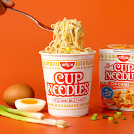

Instant/Cup Noodles

Description
Instant Noodles are even easier and faster to make than real pasta. Its great when you don´t have the time to cook, are to lazy or have not enough money.
Estimated cooking time: 5 min
Ingredients
- Instant/Cup Noodles
- Boiling Water
Steps
- Open the cup or put your noodles in a bowl
- Put some boiling water on them
- Let it sit for 3-5 minuets
- Add the spices
- Bon appetit!
<--Go Back